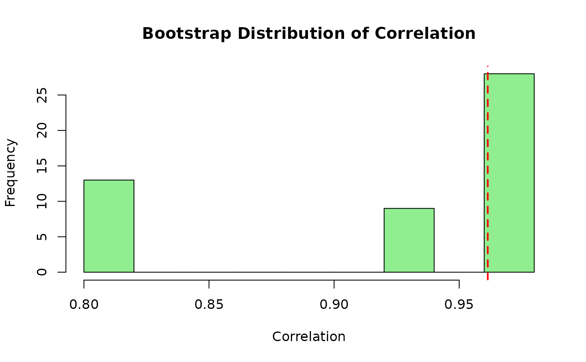
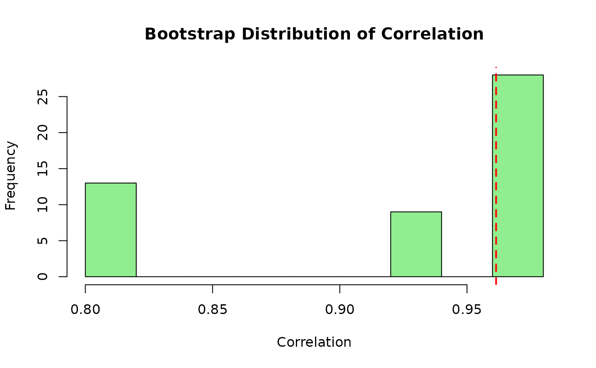

Hidden Markov Model (HMM) Bootstrap for Multivariate Time Series
hmm_bootstrap.RdFits a Gaussian Hidden Markov Model (HMM) to a multivariate time series and generates bootstrap replicates by resampling regime-specific blocks.
Usage
hmm_bootstrap(
x,
n_boot = NULL,
num_states = 2,
num_blocks = NULL,
num_boots = 100,
parallel = FALSE,
num_cores = 1L,
return_fit = FALSE,
collect_diagnostics = FALSE,
verbose = FALSE
)Arguments
- x
Numeric vector or matrix representing the time series.
- n_boot
Length of bootstrap series.
- num_states
Integer number of hidden states for the HMM.
- num_blocks
Integer number of blocks to sample for each bootstrap replicate.
- num_boots
Integer number of bootstrap replicates to generate.
- parallel
Parallelize computation?
TRUEorFALSE.- num_cores
Number of cores.
- return_fit
Logical. If TRUE, returns the fitted HMM model along with bootstrap samples. Default is FALSE.
- collect_diagnostics
Logical. If TRUE, collects detailed diagnostic information including regime composition of each bootstrap replicate. Default is FALSE.
- verbose
Logical. If TRUE, prints HMM fitting information and warnings. Defaults to FALSE.
Value
If return_fit = FALSE and collect_diagnostics = FALSE:
A list of bootstrap replicate matrices.
If return_fit = TRUE or collect_diagnostics = TRUE:
A list containing:
- bootstrap_series
List of bootstrap replicate matrices
- fit
(if return_fit = TRUE) The fitted depmixS4 model object
- states
The Viterbi state sequence for the original data
- diagnostics
(if collect_diagnostics = TRUE) A tsbs_diagnostics object
Details
This function:
Fits a Gaussian HMM to
xusingdepmixS4::depmix()anddepmixS4::fit().Uses Viterbi decoding (
posterior(fit, type = "viterbi")$state) to assign each observation to a state.Samples contiguous blocks of observations belonging to each state.
If n_boot is set, the last block will be trimmed when necessary.
If n_boot is not set, and num_blocks is set, the length of each
bootstrap series will be determined by the number of blocks and the random
lengths of the individual blocks for that particular series.
If neither n_boot nor num_blocks is set, n_boot will default to the
number of rows in x and the last block will be trimmed when necessary.
For multivariate series (matrices or data frames), the function fits a single
HMM where all variables are assumed to depend on the same underlying hidden
state sequence. The returned bootstrap samples are matrices with the same
number of columns as the input x.
Hidden Markov Model definition:
\(T\): sequence length
\(K\): number of hidden states
\(\mathbf{X} = (X_1, \dots, X_T)\): observed sequence
\(\mathbf{S} = (S_1, \dots, S_T)\): hidden (latent) state sequence
\(\pi_i = \mathbb{P}(S_1 = i)\): initial state distribution
\(A = [a_{ij}], \text{ where } a_{ij} = \mathbb{P}(S_{t+1} = j \mid S_t = i)\): transition matrix
\(b_j(x_t) = \mathbb{P}(X_t = x_t \mid S_t = j)\): output probability
Joint probability of the observations and the hidden states:
\(\mathbb{P}(\mathbf{X}, \mathbf{S}) = \pi_{S_1} b_{S_1}(X_1) \prod_{t=2}^{T} a_{S_{t-1} S_t} b_{S_t}(X_t)\)
Marginal probability of the observed data is obtained by summing over all possible hidden state sequences:
\(\mathbb{P}(\mathbf{X}) = \sum_{\mathbf{S}} \mathbb{P}(\mathbf{X}, \mathbf{S})\)
(Beware of the "double use of data" problem: The bootstrap procedure relies on regime classification, but the regimes themselves are estimated from the same data and depend on the parameters being resampled.)
When collect_diagnostics = TRUE, the function records:
Original state sequence from Viterbi decoding
State sequence for each bootstrap replicate
Block information (lengths, source positions)
This information can be used with plot_regime_composition() to visualize
how the bootstrap samples are composed from different regimes.
References
Holst, U., Lindgren, G., Holst, J. and Thuvesholmen, M. (1994), Recursive Estimation In Switching Autoregressions With A Markov Regime. Journal of Time Series Analysis, 15: 489-506. https://doi.org/10.1111/j.1467-9892.1994.tb00206.x
Examples
# \donttest{
# Requires depmixS4 package
if (requireNamespace("depmixS4", quietly = TRUE)) {
## Example 1: Univariate time series with regime switching
set.seed(123)
# Generate data with two regimes
n1 <- 100
n2 <- 100
regime1 <- rnorm(n1, mean = 0, sd = 1)
regime2 <- rnorm(n2, mean = 5, sd = 2)
x_univar <- c(regime1, regime2)
# Generate bootstrap samples
boot_samples <- hmm_bootstrap(
x = x_univar,
n_boot = 150,
num_states = 2,
num_boots = 100
)
# Inspect results
length(boot_samples) # 100 bootstrap replicates
dim(boot_samples[[1]]) # Each is a 150 x 1 matrix
# Compare original and bootstrap distributions
original_mean <- mean(x_univar)
boot_means <- sapply(boot_samples, mean)
hist(boot_means, main = "Bootstrap Distribution of Mean",
xlab = "Mean", col = "lightblue")
abline(v = original_mean, col = "red", lwd = 2, lty = 2)
## Example 2: Multivariate time series
set.seed(456)
n <- 200
# Two correlated series with regime switching
states_true <- rep(1:2, each = n/2)
x1 <- ifelse(states_true == 1,
rnorm(n, 0, 1),
rnorm(n, 4, 2))
x2 <- 0.7 * x1 + rnorm(n, 0, 0.5)
x_multivar <- cbind(x1, x2)
boot_samples_mv <- hmm_bootstrap(
x = x_multivar,
n_boot = 180,
num_states = 2,
num_boots = 50
)
dim(boot_samples_mv[[1]]) # 180 x 2 matrix
# Compute bootstrap correlation estimates
boot_cors <- sapply(boot_samples_mv, function(b) cor(b[,1], b[,2]))
original_cor <- cor(x_multivar[,1], x_multivar[,2])
hist(boot_cors, main = "Bootstrap Distribution of Correlation",
xlab = "Correlation", col = "lightgreen")
abline(v = original_cor, col = "red", lwd = 2, lty = 2)
## Example 3: Variable-length bootstrap samples
set.seed(789)
x_ar <- arima.sim(n = 150, list(ar = 0.8))
# Don't specify n_boot to get variable-length samples
boot_samples_var <- hmm_bootstrap(
x = x_ar,
n_boot = NULL, # Variable length
num_states = 2,
num_blocks = 15,
num_boots = 20
)
# Check lengths vary
sample_lengths <- sapply(boot_samples_var, nrow)
summary(sample_lengths)
## Example 4: Using verbose mode for diagnostics
set.seed(321)
x_diag <- rnorm(100)
boot_samples_verbose <- hmm_bootstrap(
x = x_diag,
n_boot = 80,
num_states = 3,
num_boots = 5,
verbose = TRUE # Print diagnostic information
)
## Example 5: Bootstrap confidence intervals
set.seed(654)
# Data with heteroskedasticity
n <- 200
x_hetero <- numeric(n)
for (i in 1:n) {
sigma <- ifelse(i <= n/2, 1, 3)
x_hetero[i] <- rnorm(1, mean = 2, sd = sigma)
}
boot_samples_ci <- hmm_bootstrap(
x = x_hetero,
n_boot = 200,
num_states = 2,
num_boots = 500
)
# Compute bootstrap confidence interval for the mean
boot_means_ci <- sapply(boot_samples_ci, mean)
ci_95 <- quantile(boot_means_ci, c(0.025, 0.975))
cat("95% Bootstrap CI for mean:", ci_95[1], "to", ci_95[2], "\n")
cat("Original mean:", mean(x_hetero), "\n")
## Example 6: Basic usage
set.seed(123)
x <- matrix(rnorm(500), ncol = 2)
boot_samples <- hmm_bootstrap(x, n_boot = 400, num_states = 2, num_boots = 50)
## With diagnostics for regime visualization
result <- hmm_bootstrap(
x, n_boot = 400, num_states = 2, num_boots = 10,
collect_diagnostics = TRUE, return_fit = TRUE
)
## Plot regime composition
plot_regime_composition(result, x)
}
#> converged at iteration 14 with logLik: -345.2058
 #> converged at iteration 21 with logLik: -641.5917

#> converged at iteration 22 with logLik: -237.4892
#> Fitting 3-state Gaussian HMM to 1-dimensional series of length 100...
#> iteration 0 logLik: -136.5052
#> iteration 5 logLik: -136.1879
#> iteration 10 logLik: -136.0729
#> iteration 15 logLik: -135.9875
#> iteration 20 logLik: -135.7953
#> iteration 25 logLik: -135.2338
#> iteration 30 logLik: -133.9723
#> iteration 35 logLik: -131.707
#> iteration 40 logLik: -128.8447
#> iteration 45 logLik: -127.3979
#> iteration 50 logLik: -126.9794
#> iteration 55 logLik: -126.8497
#> iteration 60 logLik: -126.806
#> iteration 65 logLik: -126.7847
#> iteration 70 logLik: -126.7683
#> iteration 75 logLik: -126.7525
#> iteration 80 logLik: -126.7373
#> iteration 85 logLik: -126.7237
#> iteration 90 logLik: -126.7126
#> iteration 95 logLik: -126.7041
#> iteration 100 logLik: -126.6979
#> iteration 105 logLik: -126.6934
#> iteration 110 logLik: -126.69
#> iteration 115 logLik: -126.6874
#> iteration 120 logLik: -126.6854
#> iteration 125 logLik: -126.6839
#> iteration 130 logLik: -126.6826
#> iteration 135 logLik: -126.6816
#> iteration 140 logLik: -126.6808
#> iteration 145 logLik: -126.6801
#> iteration 150 logLik: -126.6796
#> iteration 155 logLik: -126.6791
#> iteration 160 logLik: -126.6787
#> iteration 165 logLik: -126.6784
#> iteration 170 logLik: -126.6781
#> iteration 175 logLik: -126.6779
#> iteration 180 logLik: -126.6777
#> iteration 185 logLik: -126.6776
#> iteration 190 logLik: -126.6774
#> iteration 195 logLik: -126.6773
#> iteration 200 logLik: -126.6772
#> iteration 205 logLik: -126.6772
#> iteration 210 logLik: -126.6771
#> iteration 215 logLik: -126.677
#> iteration 220 logLik: -126.677
#> iteration 225 logLik: -126.6769
#> iteration 230 logLik: -126.6769
#> iteration 235 logLik: -126.6769
#> iteration 240 logLik: -126.6769
#> iteration 245 logLik: -126.6768
#> iteration 250 logLik: -126.6768
#> iteration 255 logLik: -126.6768
#> iteration 260 logLik: -126.6768
#> iteration 265 logLik: -126.6768
#> iteration 270 logLik: -126.6768
#> iteration 275 logLik: -126.6768
#> converged at iteration 280 with logLik: -126.6768
#> State distribution: 1 = 19, 2 = 47, 3 = 34
#> Generating 5 bootstrap samples...
#> Bootstrap complete. Generated 5 samples.
#> converged at iteration 22 with logLik: -393.5627
#> 95% Bootstrap CI for mean: 1.60645 to 1.878304
#> Original mean: 1.747322
#> converged at iteration 184 with logLik: -687.2476
#> converged at iteration 175 with logLik: -687.2476
#> Warning: Argument 'type' not specified and will default to 'viterbi'. This default may change in future releases of depmixS4. Please see ?posterior for alternative options.
#> converged at iteration 21 with logLik: -641.5917

#> converged at iteration 22 with logLik: -237.4892
#> Fitting 3-state Gaussian HMM to 1-dimensional series of length 100...
#> iteration 0 logLik: -136.5052
#> iteration 5 logLik: -136.1879
#> iteration 10 logLik: -136.0729
#> iteration 15 logLik: -135.9875
#> iteration 20 logLik: -135.7953
#> iteration 25 logLik: -135.2338
#> iteration 30 logLik: -133.9723
#> iteration 35 logLik: -131.707
#> iteration 40 logLik: -128.8447
#> iteration 45 logLik: -127.3979
#> iteration 50 logLik: -126.9794
#> iteration 55 logLik: -126.8497
#> iteration 60 logLik: -126.806
#> iteration 65 logLik: -126.7847
#> iteration 70 logLik: -126.7683
#> iteration 75 logLik: -126.7525
#> iteration 80 logLik: -126.7373
#> iteration 85 logLik: -126.7237
#> iteration 90 logLik: -126.7126
#> iteration 95 logLik: -126.7041
#> iteration 100 logLik: -126.6979
#> iteration 105 logLik: -126.6934
#> iteration 110 logLik: -126.69
#> iteration 115 logLik: -126.6874
#> iteration 120 logLik: -126.6854
#> iteration 125 logLik: -126.6839
#> iteration 130 logLik: -126.6826
#> iteration 135 logLik: -126.6816
#> iteration 140 logLik: -126.6808
#> iteration 145 logLik: -126.6801
#> iteration 150 logLik: -126.6796
#> iteration 155 logLik: -126.6791
#> iteration 160 logLik: -126.6787
#> iteration 165 logLik: -126.6784
#> iteration 170 logLik: -126.6781
#> iteration 175 logLik: -126.6779
#> iteration 180 logLik: -126.6777
#> iteration 185 logLik: -126.6776
#> iteration 190 logLik: -126.6774
#> iteration 195 logLik: -126.6773
#> iteration 200 logLik: -126.6772
#> iteration 205 logLik: -126.6772
#> iteration 210 logLik: -126.6771
#> iteration 215 logLik: -126.677
#> iteration 220 logLik: -126.677
#> iteration 225 logLik: -126.6769
#> iteration 230 logLik: -126.6769
#> iteration 235 logLik: -126.6769
#> iteration 240 logLik: -126.6769
#> iteration 245 logLik: -126.6768
#> iteration 250 logLik: -126.6768
#> iteration 255 logLik: -126.6768
#> iteration 260 logLik: -126.6768
#> iteration 265 logLik: -126.6768
#> iteration 270 logLik: -126.6768
#> iteration 275 logLik: -126.6768
#> converged at iteration 280 with logLik: -126.6768
#> State distribution: 1 = 19, 2 = 47, 3 = 34
#> Generating 5 bootstrap samples...
#> Bootstrap complete. Generated 5 samples.
#> converged at iteration 22 with logLik: -393.5627
#> 95% Bootstrap CI for mean: 1.60645 to 1.878304
#> Original mean: 1.747322
#> converged at iteration 184 with logLik: -687.2476
#> converged at iteration 175 with logLik: -687.2476
#> Warning: Argument 'type' not specified and will default to 'viterbi'. This default may change in future releases of depmixS4. Please see ?posterior for alternative options.
 # }
# }